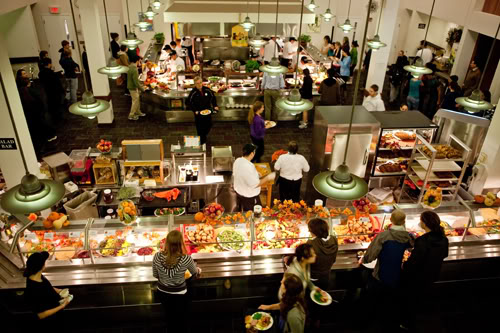
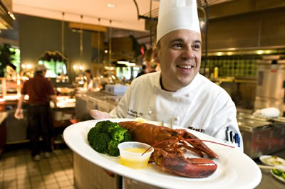

Northvale University of Technology EXPANDING YOUR FUTURE | ||||
DINING HALLNorthvale University’s dining experience is more restaurant than cafeteria, and that’s why the campus’s food services boast so many awards. The school is small, but it manages to pack tons of meal options into only two dining halls; think sushi, mussels, and grilled organic tofu. Northvale goes to the extreme to make sure students are not only well fed, but that they are eating good food and enjoying the meal experience. Dining services get major sustainability points too—the salad bar features fruits and veggies from the campus’s own organic garden, and many other ingredients come from local providers. And of course, it wouldn’t be Maine without lobster. Northvale students are invited to a real Down East Lobster Bake to celebrate the start of each school year. We serve rib eye and whole lobster almost daily—and no, we’re not talking about the fancy restaurant downtown. In addition to the chop house options in Virginia Tech’s West End Market, Northvale students can find gourmet pizza cooked in wood-fired ovens at its Italian restaurant, or eat signature burgers while watching big screen projection TVs in its sports lounge. If you manage to save room for dessert, you can try the cookie-dough topped brownie (Are you drooling yet?), one of many dishes adapted from actual students’ parents’ home recipes.  So many options Northvale has more than 30 on-campus dining locations, 10 of which are all-you-can-eat. There’s actually something for every student, from bubble tea to design-your-own omelet, stir-fry, and pancakes stations on the weekends. Students can grab a quick bite during the day (on their meal plans) at cafés, a renowned ice cream parlor (Cornell Dairy ice cream is made on the campus dairy farms!), or an award-winning vegetarian restaurant, Moosewood. Cornell dining services love specials and events, too: breakfast-for-dinner on Wednesdays and a dark chocolate tasting party. Mmmmm. But nothing beats the university’s two famous food trucks, conveniently situated near off-campus fraternity houses and open late for that much-needed, post-party piece of pizza or meatball sandwich. It’s a mouth heaven for everybody isn’t it?  |
||||